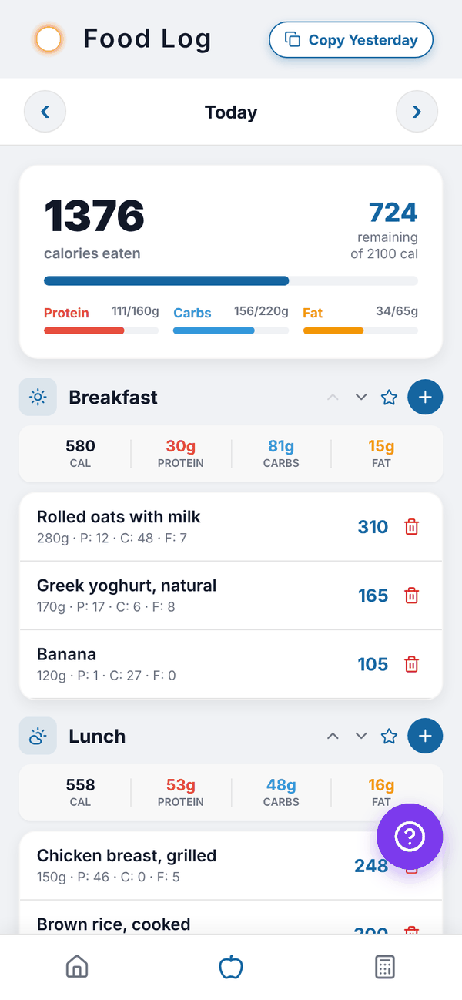
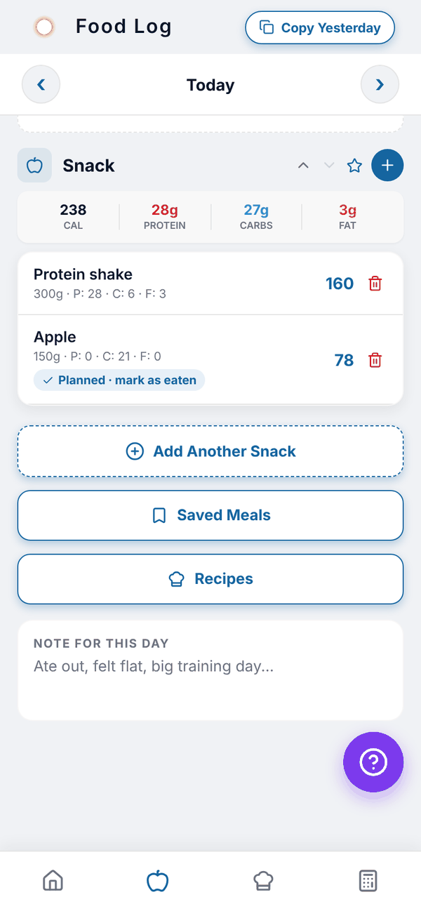

Totality Nutrition guide
Your food log
The Nutrition tab, meal by meal: move between days, add snacks, reorder meals and mark planned food as eaten.
The food log is the Nutrition tab (the apple icon on the bottom bar), or Log Food on Home. It shows one day at a time, split into meals, with totals at the top. It works the same on Free, Trial and Paid, and keeps your full history.


Read the day#
The card at the top shows calories eaten, what's remaining (or over, in red) and your target. Bars show protein, carbs and fat against their targets. A bar turns red if you go over that macro. If calorie cycling is on, a Training day or Rest day badge sits under the date.
Each meal shows its own calories, protein, carbs and fat, then each food with its serving and P, C and F grams on the right.
Move between days#
Tap the arrows either side of the date. You can go up to 7 days back and 7 days ahead of today. The date reads Today, Yesterday or Tomorrow, or the date itself.
Add food to a meal#
Tap the blue + on a meal, or Tap to add food under an empty meal. This opens Add food for that meal and day. See Add food.
Meals and snacks#
Every day starts with Breakfast, Lunch, Dinner and Snack.
- Add Another Snack adds Snack 2, then Snack 3, up to Snack 5.
- The up and down arrows on a meal move it up or down the day. The order is saved for that day.
- The star on a meal saves it as a saved meal. See Saved meals.
Planned food#
Food added from your Meal Plan shows in the log with a Planned · mark as eaten tag. Tap the tag once you've eaten it. Planned food for a future day shows Planned until that day.
Saved Meals and Recipes buttons#
Below the meals, Saved Meals opens your saved meals and Recipes opens My Recipes, both set to the day you're looking at. Recipes are Paid.
Questions#
Can I log food for last week?
You can move up to 7 days back from the Food Log date arrows. Everything you've logged stays in your history.
Can I log tomorrow's food now?
Yes, up to 7 days ahead. It counts on that day.
Do planned foods count before I mark them eaten?
Yes. They're in your log for that day as soon as they're planned, so they count in your totals. Marking them eaten just confirms you had them.
How do I change or remove a food?
Tap the food to edit it, or tap the red bin to delete it. See Editing, deleting and copying.